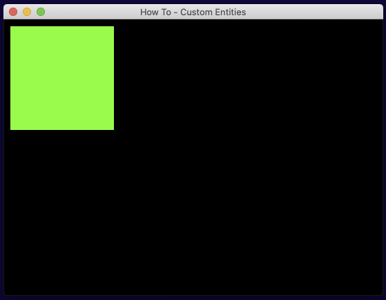
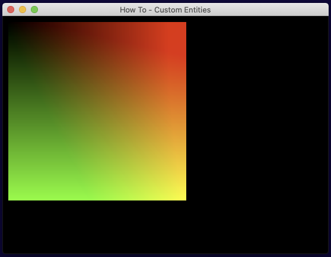

How to make a custom entity
What are custom entities?
Indigo comes with a range of primitive entity types such as Graphics and Sprites.
You can do a lot with a standard primitive, but sometimes you might like to create a visual effect that can't be expressed easily or perhaps efficiently using something out of the box.
That is where custom entities come in, they allow you to create pretty much anything you like. You are limited by what the interface requires and your ability to program against it.
Custom entities and built in primitives
A brief word on the relationship between custom entities and primitive types.
Primitive types have an advantage over custom entities in that the engine understands them, and can perform optimisations and special cased routines to help process them.
An example of this is the Group type. A custom entity is required to provide a size which tells Indigo how much space it will take up on the screen, however a group’s size is determined by the position and dimensions of it's children and this is calculated in the engine during the scene processing phase, indeed there is also special case code that manages the un-grouping of groups in order to produce a flat list of renderable items.
This sort of processing can't be achieved using custom entities because the engine does not understand them in the same way.
Having said that, new primitive types often start life as a new custom EntityNode because they are really very powerful things.
Making a custom entity
Our goal is to make two simple custom entities, one that is a solid color, and the other than draws a texture. The shaders we write will be very very simple, more complex shaders are out of the scope of this guide.
If you'd like to skip ahead, you can see the end result in the custom entity example repo.
The basics
When you get right down to it, Indigo needs to know two things about anything it's going to draw:
- The area of the screen that will be drawn into.
- What to draw in that space.
These are handled by providing some spatial parameters that Indigo will interpret, and a shader program, respectively.
Here is the interface we have to satisfy for a hypothetical custom entity called MyCustomEntity:
import indigo.*final case class MyCustomEntity() extends EntityNode[MyCustomEntity]:
def position: Point = ???
def size: Size = ???
def depth: Depth = ???
def flip: Flip = ???
def ref: Point = ???
def rotation: Radians = ???
def scale: Vector2 = ???
def withDepth(newDepth: Depth): MyCustomEntity = ???
def eventHandler: ((MyCustomEntity, GlobalEvent)) => Option[GlobalEvent] = ???
def eventHandlerEnabled: Boolean = ???
def toShaderData: ShaderData = ???<div id="mdoc-html-run1" data-mdoc-js></div>
Case classes work well, but anything that is a EntityNode will be fine.
Most of the fields are to do with allocating space on the screen, but unlike built-in primitives, you are not required to add all the usual modifiers - whether you want them or not is up to you.
The toShaderData definition is the part that tells Indigo how to draw the entity.
Filling the space with color
Here is a modified version of the code above that fills it's area with green.
final case class MyColoredEntity(position: Point, depth: Depth) extends EntityNode[MyColoredEntity]:
def size: Size = Size(32, 32)
def flip: Flip = Flip.default
def ref: Point = Point.zero
def rotation: Radians = Radians.zero
def scale: Vector2 = Vector2.one
def withDepth(newDepth: Depth): MyColoredEntity =
this.copy(depth = newDepth)
def eventHandler: ((MyColoredEntity, GlobalEvent)) => Option[GlobalEvent] =
_ => None
def eventHandlerEnabled: Boolean = false
def toShaderData: ShaderData =
ShaderData(MyColoredEntity.shader.id)
object MyColoredEntity:
val shader: EntityShader =
EntityShader
.Source(ShaderId("my-colored-shader"))
.withFragmentProgram(
"""
|void fragment() {
| COLOR = vec4(0.0, 1.0, 0.0, 1.0);
|}
|""".stripMargin
)Walking through it, position and depth have been moved to be case class arguments. The other members have been given appropriate default values, e.g. you can't rotate this because there's no way to set rotation, and withDepth has been implemented as a simple case class copy operation.
Then things get a little more complicated. toShaderData has been implemented by creating a ShaderData instance that only takes a ShaderId, which it sources from the companion object.
The companion object defines the shader that is going to color in our entity by declaring an EntityShader (as opposed to a BlendShader). Shader instances whether a BlendShader or an EntityShader come in two forms: EnityShader.Source(..) or EnityShader.External(..). The difference is that Source instances literally take the GLSL program as a String, and External instances look for loaded assets, which is a much nicer editing experience.
There are several parts to an Indigo shader program that can be set (or default implementations are used), but in this case we're only setting the fragment program as follows:
void fragment() {
COLOR = vec4(0.0, 1.0, 0.0, 1.0);
}
This tells the GPU to set the COLOR output variable to a vec4 that denotes the RGBA color of the pixel with values ranging from 0.0f to 1.0f. Here we're setting full green and full alpha (opaque).
To use this shiny new entity, we have to do two things:
First, tell indigo about the new shader:
In the sandbox this would be a game field just like assets and fonts, i.e. val shaders: Set[Shader] = Set(MyColoredEntity.shader), and there is an equivalent for the BootResult type as follows:
def boot(flags: Map[String, String]): Outcome[BootResult[Unit]] =
Outcome(
BootResult
.noData(GameConfig.default)
.withShaders(MyColoredEntity.shader)
)<div id="mdoc-html-run3" data-mdoc-js></div>
Next the fun bit, we need to add it to our scene, e.g.:
def present(context: FrameContext[Unit], model: Unit, viewModel: Unit): Outcome[SceneUpdateFragment] =
Outcome(
SceneUpdateFragment(
MyColoredEntity(Point(10, 10), Depth(1))
)
)<div id="mdoc-html-run4" data-mdoc-js></div>
If you wanted to set the color dynamically you'd need to send it to the shader via a UniformBlock, but that's out of scope for this tutorial.
One more thing before we move on to textures. Indigo's shaders come with a series of variables and constants you can access, let's use one of them now by modifying our program as follows:
void fragment() {
COLOR = vec4(UV.x, UV.y, 0.0, 1.0);
}
The UV variable of type vec2, tells you the position of the pixel you are drawing as coordinates from (0.0f, 0.0f) in the top left to (1.0f, 1.0f) in the bottom right. So conveniently, we can illustrate this top-left to bottom-right transition by plugging the UV.x and UV.y fields in as our red and green values.
Note that GLSL has a limited set of types and they all have quite flexible constructors, so you could also write the following which has the same meaning:COLOR = vec4(UV, 0.0, 1.0);, additionally access to fields like.xcan be replaced with color indicators like.r,.g,.b, and.a- same value but makes more reading sense if your processing colors.
Using textures
Here is an almost identical entity to the last one and I won't repeat myself, but remember to:
- Tell indigo about the shader (as above), note that shader id's must be unique.
- Add the entity to the scene
- Tell indigo to load the asset using the normal asset loading process.
final case class MyBitmapEntity(asset: AssetName, position: Point, depth: Depth) extends EntityNode[MyBitmapEntity]:
def size: Size = Size(32, 32)
def flip: Flip = Flip.default
def ref: Point = Point.zero
def rotation: Radians = Radians.zero
def scale: Vector2 = Vector2.one
def withDepth(newDepth: Depth): MyBitmapEntity =
this.copy(depth = newDepth)
def eventHandler: ((MyBitmapEntity, GlobalEvent)) => Option[GlobalEvent] =
_ => None
def eventHandlerEnabled: Boolean = false
def toShaderData: ShaderData =
ShaderData(MyBitmapEntity.shader.id)
.withChannel0(asset)
object MyBitmapEntity:
val shader: EntityShader =
EntityShader
.Source(ShaderId("my-bitmap-shader"))
.withFragmentProgram(
"""
|void fragment() {
| COLOR = CHANNEL_0;
|}
|""".stripMargin
)<div id="mdoc-html-run5" data-mdoc-js></div>
The difference between this one and the last one is that we're telling Indigo to use a texture by assigning it to a channel and referring to it in the shader program.
Important: Textures aren't quite as straightforward as they seem, a key piece of information is that when you load textures, Indigo attempts to compile them into 4k texture atlases, which reduces context switching. Currently, Indigo is limited to only loading one atlas at a time, so although aShaderDatainstance allows you to set four channels with differentAssetNames, they must all be on the same atlas. For small games you don't need to worry, but if you have large assets you can force Indigo to place related images onto the same atlas usingAssetType.Tagged("my tag")(image1..imageN)in your asset list.
The shader data has the asset name given to channel 0, and in the fragment shader we set the COLOR output to the color value sampled from the texture, which is set to a variable called CHANNEL_0, which is a vec4. If we wanted to, we could only draw the red component of the texture by doing the following:
void fragment() {
COLOR = vec4(CHANNEL_0.r, 0.0, 0.0, CHANNEL_0.a);
}Wrapping up
I hope that's given you a small taste of the power of writing custom entities, and a starting point for you to begin creating your own. Much of the heavy lifting is done by writing shaders which we haven't gone too far into here, but if you need some shader inspiration I'd recommend heading over to shadertoy for a browse. <script type="text/javascript" src="howto-custom-entity.md.js" defer></script> <script type="text/javascript" src="mdoc.js" defer></script>